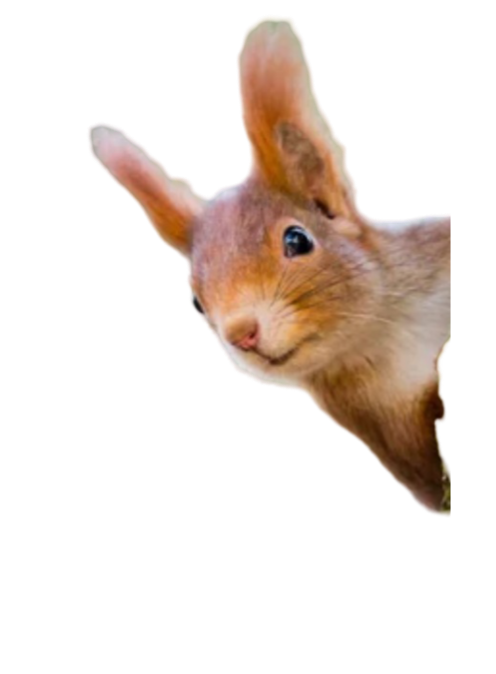

Home
Trees
Reviews
Pokyčių ir triukšmo pasaulyje medžiai stovi kaip tvirti jėgos stulpai.
Atrask ramybę tyliame lapų šlamesy.
Sužinok daugiau apie medžius

Enable Sound
Your browser does not support the audio element.